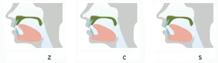
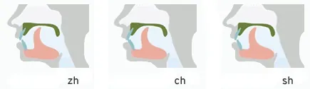
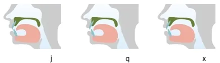

Grammar
Consonants
b, d, g, z, zh, j - non-aspirated
р, t, k, с, ch, q - aspirated
z, c, s - tip of the tongue raised to alveoles

zh, ch, sh, r - tip of the tongue raised to palate
zh, ch, sh - voiceless
r - voiced

j, q, x - tip of the tongue pressed to lower teeth, sides of the tongue touch upper teeth
x - hissing
